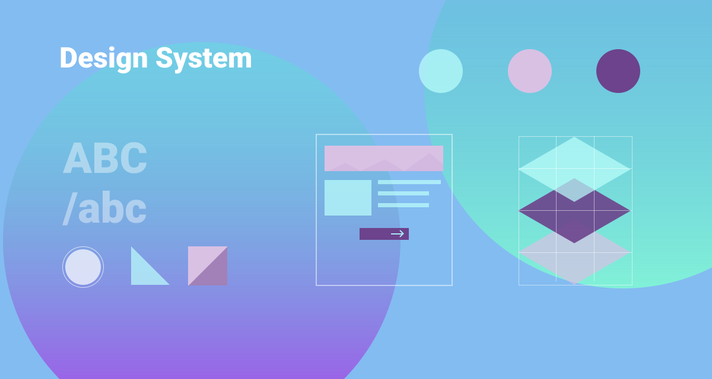

Inefficient tools to manage business can cost more than the business itself. One of the largest finance organizations was struggling with inefficient project management and collaboration tools. Managing secure data shared across multiple platforms, role-based access, complex navigation were some of the challenges they were talking about. The platform was not capable of scaling and adapting to increasing use. We, the UX team involved to design an efficient, user-friendly platform that supports scalability and uniformity.
To design a secure ‘global, role-based, one-stop workspace for all front line staff. Improve operational effectiveness through improved access to knowledge, increased collaboration, and efficient process management. A few apparent problems were:
Collaborating with stakeholders, a walkthrough of the existing platforms helped with a high level understanding of the problem, followed by a design audit to identify the underlying usability issues. A number of user interviews provided insights about role and persona. It also helped validate the usability issues identified earlier.
Stakeholder and user interviews helped understand the existing system, operations, user groups, and their role. Findings and insights were used to create five primary user persona and their journey map.
Based on the insights captures in the discovery phase, a number of improvement areas were identified. We categorized them into these five focused themes of improvement:
Consistency in design and experience was one of the key deliverables, therefore we set up a framework for designers and developers to take reference of design standards and guidelines. It was supported by Axure library and code snippet of reusable components for both designer and developers.
To validate the design solutions, multiple moderated and unmoderated usability testing sessions were conducted at the client location. This helped refine solutions and make them more personalized.